Workshop · 12 november 2026 · Geonovum, Amersfoort
3D Tiles (1.0 en 1.1) maken en bekijken
Verkent, verbindt, verankert
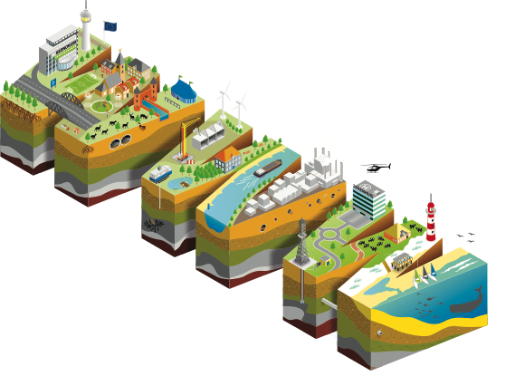
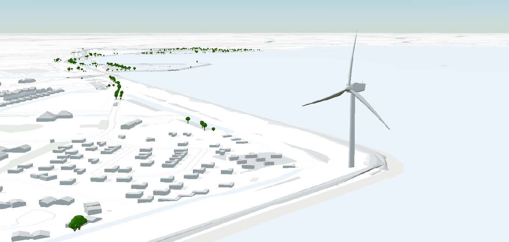
Om de Docker omgeving op te starten zijn er twee bestanden nodig: docker-compose.yml en Dockerfile. Deze bestanden staan in de repository van de workshop.
Kopieer deze bestanden naar een lege directory op je lokale machine, bijvoorbeeld c:\3dtiles-workshop. Een makkelijke
manier om dit te doen is click rechtermuis op de link en kies 'Save link as...'
Open een terminal (cmd, PowerShell of Git Bash) en ga naar de directory waar je de bestanden hebt opgeslagen
Let op: Zorg dat Docker is geïnstalleerd (via 'docker ps') en draait voordat je verder gaat.
Tip: Een alternatieve manier om de twee bestanden op te halen is de gehele repository te clonen via 'git clone'
Voor het opzetten van de workspace run het volgende commando vanuit de
directory waar de bestanden docker-compose.yml en Dockerfile staan:
docker compose up -dEr worden 2 containers gestart:
postgis: een PostgreSQL database met PostGIS extensieworkspace: een Linux container (GDAL op Alpine) met daarin alle benodigde tools geïnstalleerdDe twee containers draaien in een apart netwerk en kunnen met elkaar communiceren. De database is vanaf de host machine
bereikbaar via poort 5439, de workspace container is bereikbaar via poort 8080 (voor de webserver die we later gaan gebruiken).
Tip: Gebruik het commando docker compose down om de containers
te stoppen en te verwijderen.
Gebruik pgAdmin, DBeaver of QGIS om verbinding te maken met de PostGIS database:
localhost5439postgrespostgrespostgresNieuwe verbinding aanmaken:
Let op: als je vanuit de workspace container verbindt met de database,
gebruik dan postgis als host.
Voorbeeld connectie met database maken in QGIS:
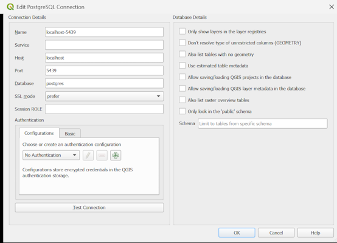
Gebruik het volgende commando om een shell verbinding te maken met de workspace container:
docker exec -it workspace shdocker exec voert een commando uit in een draaiende container, -it maakt het interactief met een echte terminal, workspace is de naam van de container en sh is de shell die gestart wordt (de container heeft geen bash). Alles wat je daarna typt, draait in de container en niet op je eigen machine.
Als het goed is kom je in de directory /workspace terecht. Deze map is via
een volume mapping direct verbonden met de ./container map op je lokale
machine. Alle bestanden die je in ./container zet zijn ook
beschikbaar in /workspace, en andersom.
Run ls -la om te checken wat er in de /workspace directory
staat.
Tip: Gebruik het commando exit of Ctrl + D om de
verbinding met de container te verbreken.
In dit deel gaan we:
We gebruiken het Digitaal Topografisch Bestand (DTB) van Rijkswaterstaat als brondata.
Tip: Zie folder 'resultaten' voor al aangemaakte tilesets
./container/data/dtb
De map ./container staat naast je docker-compose.yml (bijv. c:\3dtiles-workshop\container). Maak de submappen data\dtb zelf aan. In de container is dit /workspace/data/dtb.
ogrinfo /vsizip/data/dtb/d15cz.zipGDAL is een open source toolkit voor het lezen, omzetten en bewerken van geodata. ogrinfo is de GDAL-tool die toont welke lagen er in een vectorbestand zitten, met o.a. geometrietype, projectie en attributen.
De zip bevat 3 shapefiles:
Good to know: de /vsizip/ prefix voor de file path
in ogrinfo zorgt ervoor dat je ZIPs kunt inspecteren.
Vraag: wat is de projectie van de bestanden?
Hint: dit kun je op meerdere manieren achterhalen: met GDAL, via de bestanden van de shapefile, in QGIS of in pgAdmin/DBeaver.
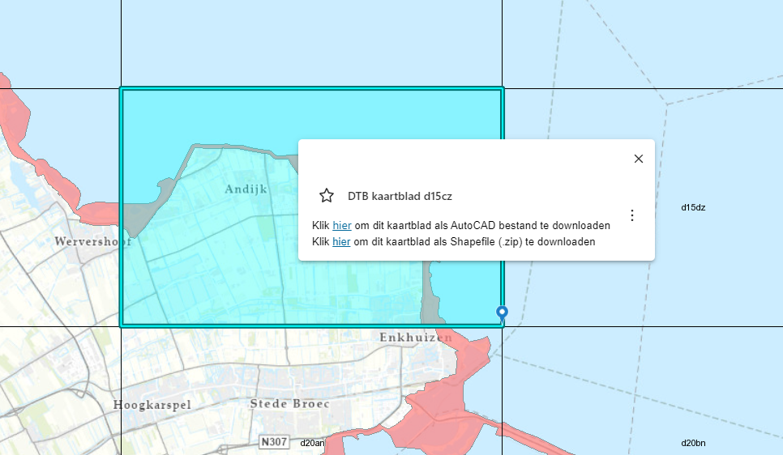
Nu gaan we de DTB data inladen in de database. Run de volgende commands vanuit de shell container.
Voor het laden van de DTB vlakken:
ogr2ogr -f "PostgreSQL" PG:"host=postgis port=5432 user=postgres dbname=postgres password=postgres" /vsizip/data/dtb/d15cz.zip/d15cz_reg.shp -nln public.dtb_vlak_andijk -nlt MULTIPOLYGONZogr2ogr (GDAL) leest de vlakken-shapefile direct uit de ZIP en schrijft ze naar de tabel dtb_vlak_andijk in PostGIS. De projectie blijft hetzelfde als in het bronbestand.
Voor het laden van de DTB punten:
ogr2ogr -f "PostgreSQL" PG:"host=postgis port=5432 user=postgres dbname=postgres password=postgres" /vsizip/data/dtb/d15cz.zip/d15cz_sym.shp -t_srs epsg:4979 -nln public.dtb_punt_andijk -nlt POINTZHetzelfde voor de punten, naar de tabel dtb_punt_andijk. Met -t_srs epsg:4979 worden de coördinaten tijdens het laden omgezet naar WGS84 3D (zie volgende sheet).
Good to know:
postgis gebruiken als host en niet localhost, omdat
we vanuit de container werken.5432 gebruiken en niet externe poort 5439, omdat
we vanuit de container werken.-nln optie in ogr2ogr zorgt ervoor dat er eerst een tabel voor de data wordt
aangemaakt.-nlt optie zorgt ervoor dat de geometrie correct wordt ingeladen (als
MULTIPOLYGONZ).Controleer of de data goed geladen is:
psql -c "SELECT count(*) from public.dtb_vlak_andijk;"psql -c "SELECT count(*) from public.dtb_punt_andijk;"psql is de command-line client van PostgreSQL. Deze commando's tellen het aantal rijen per tabel. Krijg je een getal groter dan 0, dan is het laden gelukt. Er hoeft geen wachtwoord bij, dat staat al in de omgevingsvariabelen van de container.
Waarom worden alleen de punten omgezet naar WGS84?
Good to know: 3D Tiles zelf gebruikt intern ECEF (EPSG:4978): x, y en z vanuit het middelpunt van de aarde. Beide tools zetten de data uiteindelijk om naar ECEF.
Nu gaan we de data voorbereiden voor de omzetting naar 3D Tiles.
Maak ruimtelijke indexen aan in een database client:
pg2b3dm en i3dm.export verdelen de data in tiles en vragen daarvoor steeds de objecten binnen een bepaald gebied op. Een ruimtelijke (GiST) index maakt die zoekvragen veel sneller. pg2b3dm bepaalt per vlak de tile op basis van het middelpunt van de omhullende rechthoek, daarom indexeren we bij de vlakken precies die expressie.
CREATE INDEX ON public.dtb_vlak_andijk USING gist(st_centroid(st_envelope(wkb_geometry)));
CREATE INDEX ON public.dtb_punt_andijk USING gist(wkb_geometry);Open een SQL-venster, plak de SQL en voer het uit:
pgAdmin: klik op de database postgres → menu Tools → Query Tool, uitvoeren met F5 (of ▶).
DBeaver: klik op je verbinding → menu SQL Editor → New SQL script, uitvoeren met Alt+X (hele script).
QGIS: menu Database → DB Manager → kies je PostGIS-verbinding → SQL Window, uitvoeren met Execute.
Maak een database view voor de punten (bomen) in een database client:
Een view is een opgeslagen query: er wordt geen data gekopieerd. Deze view selecteert alleen de punten die een boom zijn en levert de kolommen die i3dm.export verwacht: rotation en scale per boom, tags met de attributen die je later in de viewer ziet als je op een boom klikt, model met het 3D-model dat op elk punt wordt geplaatst, en geom met de locatie. Uitvoeren gaat op dezelfde manier als hierboven.
CREATE or replace view public.v_dtb_punt_andijk AS
SELECT
RANDOM()*360 AS rotation,
(RANDOM()*1.5)+0.5 AS scale,
json_build_array(json_build_object('dtb id',dtb_id),
json_build_object('omschrijving',omschr),
json_build_object('datum',datum)) AS tags,
'tree.glb' AS model,
wkb_geometry AS geom
FROM public.dtb_punt_andijk
WHERE omschr = 'Boom';
Good to know: we geven de bomen een random rotation en scale, zodat er wat variatie in zit. Merk ook op dat we 'tree.glb' als string toevoegen, hiermee koppelen we later het 3D model voor de boom.
Gebruik een GIS programma of database client om de data te bekijken.
QGIS: open het Browser-paneel → PostgreSQL → je verbinding → public,
en sleep dtb_vlak_andijk en v_dtb_punt_andijk naar de kaart.
DBeaver: in de Database Navigator: verbinding → postgres → Schemas →
public → Tables, dubbelklik op de tabel → tab Data → klik op Spatial
om de hele tabel op een kaart te zien.
pgAdmin: open de Query Tool en voer bijv. SELECT * FROM public.dtb_vlak_andijk; uit.
Klik in de resultaten op het oogje bij de geometriekolom (Geometry Viewer).
DTB punten (bomen)
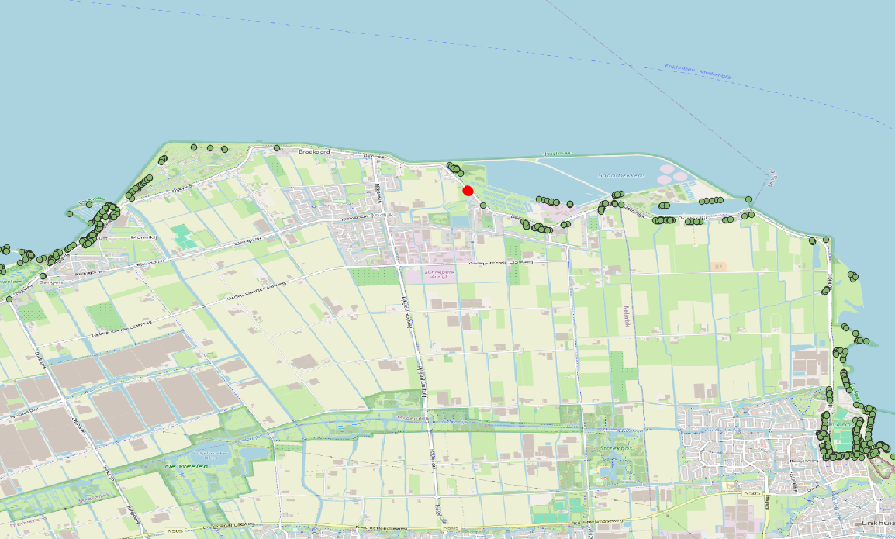
DTB vlakken
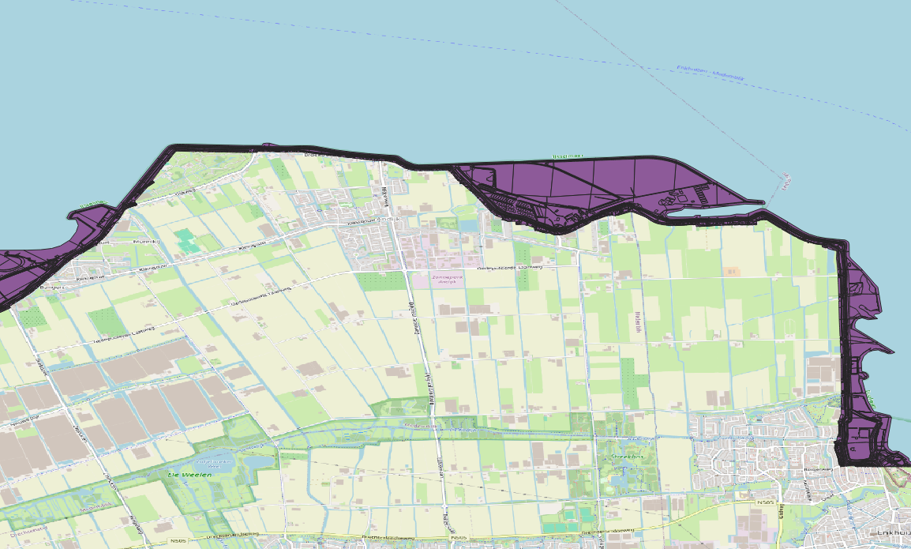
We gaan nu de tool pg2b3dm gebruiken om 3D Tiles te maken van de DTB vlakken.
pg2b3dm geïnstalleerd is met pg2b3dm --versionpg2b3dm --help om de opties van de tool te weergeven
pg2b3dm leest geometrieën (vlakken,
lijnen met --radiuscolumn) uit een PostGIS-tabel en maakt er 3D Tiles van. De opties
vallen in groepen:
Verbinding: -U (gebruiker), -h (host), -p (poort), -d (database).
Data: -t (tabel), -c (geometriekolom), -a (attributen die je later in de viewer ziet),
-q (filter, bijv. alleen één type vlak).
Uiterlijk: --default_color, --shaderscolumn (kleur per object), --add_outlines,
--double_sided.
Tiling: --max_features_per_tile (standaard 1000), -g / --geometricerrorfactor (wanneer een
tile geladen wordt), --use_implicit_tiling, -r (ADD of REPLACE), -l (LOD-kolom).
Uitvoer: -o (map), --create_gltf (glb of b3dm), -f (Cesium of Mapbox).
pg2b3dm -U postgres -h postgis -p 5432 -d postgres -t public.dtb_vlak_andijk -a dtb_id,omschr,datum --use_implicit_tiling false -o ./output/dtb_vlakken -c wkb_geometry --create_gltf falseWe verbinden met de database in de postgis-container (-U, -h, -p, -d) en lezen de tabel dtb_vlak_andijk met geometriekolom wkb_geometry (-t, -c). De kolommen dtb_id, omschr en datum gaan als attributen mee (-a). --use_implicit_tiling false zet alle tiles uitgeschreven in één tileset.json, en --create_gltf false schrijft de tiles als .b3dm-bestanden (3D Tiles 1.0) in plaats van .glb. Het resultaat komt in ./output/dtb_vlakken (-o).
Wat doet pg2b3dm met de vlakken?
Een viewer zoals Cesium leest eerst tileset.json en laadt daarna alleen de tiles die in beeld zijn en dichtbij genoeg zijn (op basis van de geometric error). Zo blijft de viewer snel, ook bij heel veel data.
Resultaat: een tileset.json bestand en een directory 'content' met de 3D tiles in b3dm formaat.
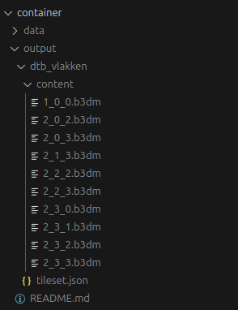
Good to know: zo ziet de tileset.json eruit (4685 vlakken → 10 tiles):
* Meerdere detailniveaus (LOD) maken met pg2b3dm komt aan bod in een extra opdracht.
We gaan nu de tool i3dm.export gebruiken om 3D Tiles te maken van de DTB punten. We
kunnen op elk punt een 3D-model (bijvoorbeeld van een boom) renderen. Dit doen we door
i3dm.export ook een GLB-bestand mee te geven.
i3dm.export geïnstalleerd is met
i3dm.export --version
i3dm.export --help om de opties van de tool te weergeven
i3dm.export leest punten uit een
PostGIS-tabel of view en plaatst op elk punt een 3D-model (instancing). Uit de tabel gebruikt
het de kolommen model, rotation, scale en tags. De opties vallen in groepen:
Verbinding: -c (connection string met host, gebruiker, wachtwoord, database en poort).
Data: -t (tabel of view), --geometrycolumn (standaard geom), -q (filter).
Modellen: --use_external_model (model als los bestand in plaats van ingebakken),
--use_scale_non_uniform (aparte schaal per as).
Tiling: --max_features_per_tile (standaard 1000), -g (geometric error, standaard 1000),
--boundingvolume_heights (min/max hoogte van de tiles, standaard 0,10 m), --use_clustering.
Uitvoer: -o (map), --use_i3dm (.i3dm in plaats van .cmpt), --use_gpu_instancing
(.glb met EXT_mesh_gpu_instancing, 3D Tiles 1.1), --tileset_version.
./container directory op je
host machine.
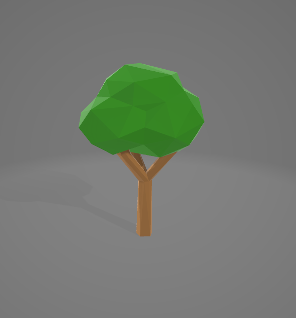
i3dm.export -c "Host=postgis;Username=postgres;Password=postgres;Database=postgres;Port=5432" -t public.v_dtb_punt_andijk -o ./output/dtb_punten --use_i3dm trueWe verbinden met de database in de
postgis-container (-c) en lezen de view v_dtb_punt_andijk (-t), die je op
sheet 15 hebt gemaakt. Die levert per boom
de locatie (geom), het model (tree.glb), een rotatie, een schaal en de attributen (tags).
Het model (tree.glb) komt niet uit het commando, maar uit de view. De view is in de database
opgeslagen als query. i3dm.export voert hem uit en krijgt per boom in de kolom model
de tekst 'tree.glb'. Dat is alleen een bestandsnaam: het 3D-model zelf staat niet in de database.
i3dm.export zoekt het bestand op in de map waar je het commando uitvoert (/workspace in de
container, ./container op je host). Staat het daar niet, dan stopt het met de fout
Could not find file '/workspace/tree.glb'.
--use_i3dm true schrijft de tiles als .i3dm-bestanden in plaats van .cmpt. Het resultaat komt
in ./output/dtb_punten (-o).
Wat doet i3dm.export met de punten?
Resultaat: een tileset.json bestand, een directory 'content' met de 3D tiles in i3dm formaat en een directory 'subtrees'.
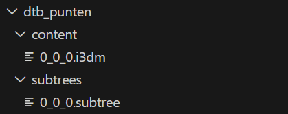
Valideer de tilesets met de 3d-tiles-validator (in de Docker container):
3d-tiles-validator --tilesetFile ./output/dtb_vlakken/tileset.json3d-tiles-validator --tilesetFile ./output/dtb_punten/tileset.jsonHoe zie je het resultaat? In de terminal verschijnt een rapport. Bovenaan staan numErrors, numWarnings en numInfos. Onder issues staat per melding het bestand (path), de uitleg (message) en de ernst (severity: ERROR, WARNING of INFO). Bij 0 errors is de tileset geldig. Met --reportFile rapport.json schrijf je het rapport naar een bestand.
Tip:Bij valideren van dtb_punten verschijnen 'info' meldingen. Reden is dat model 'tree.glb' niet helemaal voldoet aan de glTF specificatie. Voor nu negeren we deze waarschuwing.
Klaar met deel 1? Blijf in de workspace-container: op sheet 21 start
je daar de webserver voor deel 2. Ben je er toch uit (je prompt begint met PS of
C:\), ga dan terug met docker exec -it workspace sh. Stop de containers
niet met docker compose down; dat doe je pas bij de cleanup op sheet 45.
In dit deel gaan we:
Er is een npm http server geïnstalleerd in de docker container. Die serveert alle files uit de
/workspace folder. De server draait standaard op poort 8080, die wordt gemapt naar je
host poort 8080.
Start de server:
http-serverOpen een webbrowser en ga naar http://localhost:8080
Je ziet nu de directory structuur van /workspace.
Tip: de server blijft draaien en houdt de terminal bezet. Stoppen doe je met Ctrl+C. Wil je ondertussen andere commando's uitvoeren, open dan een tweede terminal.
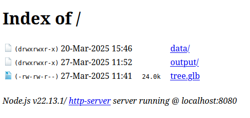
We gaan nu de CesiumJS Viewer gebruiken om de 3D Tiles te bekijken.
Kopieer bestand cesium-viewer.html uit de 3D Tiles workshop repository naar `./container`. Deze HTML pagina bevat Javascript code die met behulp van de CesiumJS library 3D data inlaadt.
In de code worden 4 tilesets geladen:
Open een browser en ga naar http://localhost:8080/cesium-viewer.html
De Cesium viewer bevat een aantal kaartlagen:
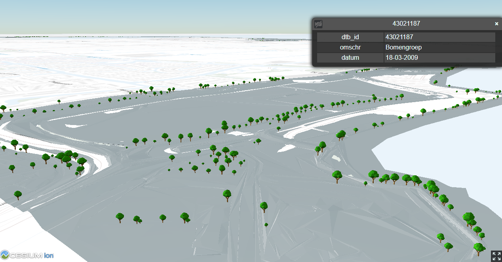
Zo worden de lagen ingeladen in cesium-viewer.html (ingekort):
// 1. PDOK achtergrondkaart (grijs), als ondergrond van de viewer
var viewer = new Cesium.Viewer('cesiumContainer', {
...
baseLayer: new Cesium.ImageryLayer(new Cesium.UrlTemplateImageryProvider({
url: "https://service.pdok.nl/brt/achtergrondkaart/wmts/v2_0/grijs/EPSG:3857/{z}/{x}/{y}.png",
maximumLevel: 19,
}))
});
// 2. PDOK quantized mesh terreinmodel (3D Basisvoorziening DTM)
var terrainProvider = await Cesium.CesiumTerrainProvider.fromUrl(
'https://api.pdok.nl/kadaster/3d-basisvoorziening/ogc/v1_0/collections/digitaalterreinmodel/quantized-mesh'
);
viewer.scene.terrainProvider = terrainProvider;
// 3. DTB vlakken (gemaakt met pg2b3dm), 1 meter omhoog geschoven
const tilesetDtbVlakken = await Cesium.Cesium3DTileset.fromUrl(
"./output/dtb_vlakken/tileset.json"
);
tilesetDtbVlakken.modelMatrix = Cesium.Matrix4.fromTranslation(new Cesium.Cartesian3(0, 0, 1));
viewer.scene.primitives.add(tilesetDtbVlakken);
// 4. DTB punten / bomen (gemaakt met i3dm.export)
const tilesetPunten = await Cesium.Cesium3DTileset.fromUrl(
"./output/dtb_punten/tileset.json"
);
viewer.scene.primitives.add(tilesetPunten);Styling kan worden toegepast op twee manieren:
Bijvoorbeeld met pg2b3dm (--default_color of --shaderscolumn). De kleur wordt in de tiles opgeslagen; voor een andere kleur moet je de tileset opnieuw maken.
De viewer kleurt de objecten op basis van hun attributen, bijvoorbeeld met een Cesium3DTileStyle. De tiles blijven hetzelfde; je past alleen de code aan.
Wij doen hier het tweede. Voeg de volgende code toe in cesium-viewer.html (in
./container) om de DTB vlakken een kleur te geven op basis van hun omschrijving:
Tip: Voeg code toe onder regel '// todo: voeg hier code toe'
tilesetDtbVlakken.style = new Cesium.Cesium3DTileStyle({
color: {
conditions: [
["${feature['omschr']} === 'Bitumen'", "color('#430719')"],
["${feature['omschr']} === 'Steen bekleding'", "color('#740320')"],
["${feature['omschr']} === 'Bomen en struiken'", "color('#008000')"],
["${feature['omschr']} === 'Industrieterrein'", "color('#FFFF00')"]
// todo: add more conditions
]
}
});Opdracht: maak features waar omschr === 'Meer' blauw.
Kopieer het 3D model windturbine.glb naar de werkdirectory.
Voeg de volgende code toe aan cesium-viewer.html
const windturbine = viewer.entities.add({
position: Cesium.Cartesian3.fromDegrees(5.193486,52.754867),
model: {
uri: "windturbine.glb"
},
});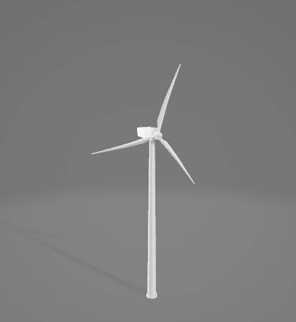
In de 3D Basis voorziening van PDOK zijn landelijke 3D Tilesets beschikbaar.
Voeg de 3D gebouwen tileset toe aan de Cesium Viewer:
const tileset3DGebouwen = await Cesium.Cesium3DTileset.fromUrl(
"https://api.pdok.nl/kadaster/3d-basisvoorziening/ogc/v1_0/collections/gebouwen/3dtiles"
);
viewer.scene.primitives.add(tileset3DGebouwen);Tip: Voor 3D LoD2.2 gebouwen gebruik https://data.3dbag.nl/v20250903/cesium3dtiles/lod22/tileset.json
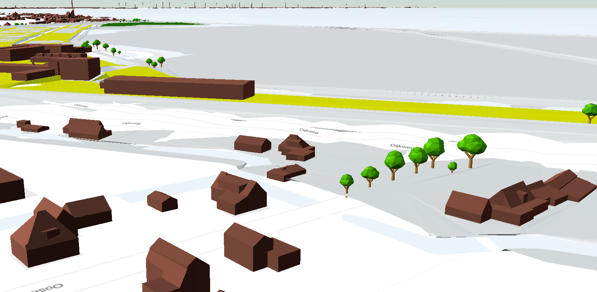
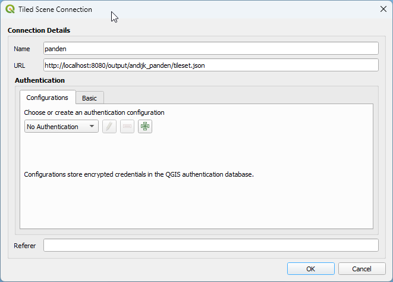
2D weergave in QGIS:
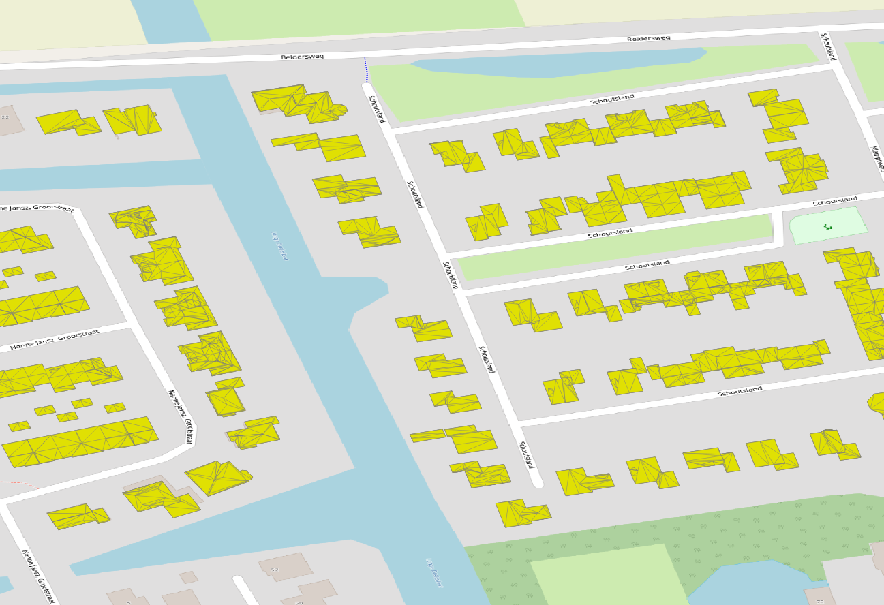
Vraag: Waarom bestaan alle panden uit driehoeken?
3D weergave in QGIS (via Views -> 3D Map Views -> Create new 3D Map View)
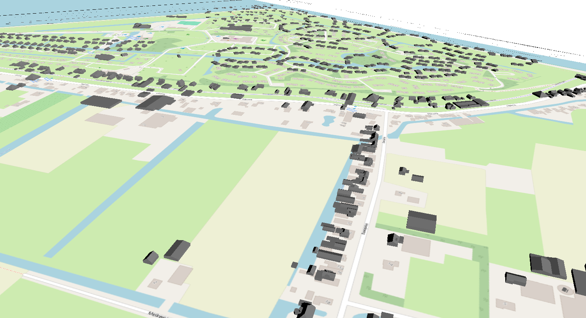
Wat valt er op aan de 3D View in QGIS?
Klaar? Hierna volgen de optionele opdrachten. Wil je stoppen, ga dan direct naar de cleanup op sheet 45 om de Docker-containers op te ruimen.
Gebruik BAG data (.gpkg) om 3D Tiles te maken van de panden in Andijk.
Stappen:
IFC model: Kievitsweg_R25_ILS Spaces 20250815_LoGeoRef50.ifc (uit
data_bronnen). Kopieer het naar ./container en exporteer het naar GLB met
IfcOpenShell in de ifc-container:
docker exec -it ifc sh
ifc_naar_glb.py -o model.glbHet script zet alle .ifc-bestanden in ./container om. Staan
er meerdere, dan krijgt elk een eigen .glb met dezelfde naam (de -o geldt alleen bij één
IFC). Staat er geen IFC, dan geeft het een foutmelding. Het script laat ruimtes (IfcSpace) en sparingen weg en schrijft
model.glb naar /workspace (./container op je host). Is de IFC
gegeorefereerd (IfcMapConversion), dan print het ook de Cesium-code met de juiste locatie en hoogte.
Voeg toe aan Cesium Viewer (zoek een handige lokatie):
viewer.entities.add({
position: Cesium.Cartesian3.fromDegrees(5.194139,52.753524),
model: {
uri: "model.glb",
heightReference: Cesium.HeightReference.CLAMP_TO_GROUND
},
});
Tip: Gebruik HeightReference.CLAMP_TO_GROUND om het model op het terrein te plaatsen.
Tip: Element 'IfcSite' in de IFC file kan worden gebruikt om de locatie van het model te definiëren.
Vraag: Wat zijn de beperkingen van deze aanpak?
Zet het BIM-model van een parkeergarage (P+R Kralingse Zoom, Rotterdam) om naar 3D Tiles met drie detailniveaus. Ver weg zie je een blok, dichterbij de verdiepingen, dichtbij het volledige IFC-model.
./container.docker exec -it ifc sh
ifc_naar_lod.py PKZ_HPP_TO_MOD_COM_ARC_A_02.ifc --zonder IfcMemberpg2b3dm -h postgis -U postgres -d postgres -t public.parkeergarage_lod -c geom -l lod -r REPLACE -a model,ifc_klasse,naam,verdieping --use_implicit_tiling false -g 80 -o ./output/parkeergarage-l lod gebruikt de LOD-kolom: lod 0 komt in de bovenste tile, lod 1 daaronder en lod 2 in de tiles daar weer onder. -r REPLACE: een fijner niveau vervangt het grovere. -g 80 bepaalt de geometric error en daarmee wanneer de viewer wisselt: bij een scherm van 1000 pixels hoog op ongeveer 1 km (blok → verdiepingen) en 500 m (verdiepingen → detail).
const tilesetParkeergarage = await Cesium.Cesium3DTileset.fromUrl(
"./output/parkeergarage/tileset.json"
);
viewer.scene.primitives.add(tilesetParkeergarage);
tilesetParkeergarage.style = new Cesium.Cesium3DTileStyle({
color: {
conditions: [
["${feature['ifc_klasse']} === 'Gebouw'", "color('#E8A33D')"],
["${feature['ifc_klasse']} === 'Verdieping'", "color('#3D8BE8')"],
["true", "color('#FFFFFF')"]
]
}
});De parkeergarage staat in Rotterdam. Vervang onderaan de regel
viewer.zoomTo(tilesetDtbVlakken, ...) door
viewer.zoomTo(tilesetParkeergarage); zodat de viewer erheen vliegt.
Vraag: Zoom langzaam in en uit. Bij welke afstand wisselt het detailniveau? Wat gebeurt er met -g 40 of -g 200?
Verder: de IFC_BuildingEnvExtractor van de TU Delft haalt de buitenschil uit een IFC in meerdere LOD's (LoD0 t/m LoD3, als CityJSON).
De parkeergarage bestaat uit meerdere IFC-modellen, één per discipline. Ze hebben dezelfde georeferentie, dus in Cesium vallen ze precies over elkaar. Met --toevoegen zet je ze in dezelfde tabel als het architectuurmodel. --alleen-detail maakt geen blokken: deze modellen komen alleen in lod 2 en verschijnen dus pas als je dichtbij bent.
3a. Bestaand en nieuw. Kopieer de twee constructiemodellen naar
./container en voeg ze toe in de ifc-container:
ifc_naar_lod.py PKZ_PHM_TO_MOD_COM_CON_A_01.ifc --model Bestaand --toevoegen --alleen-detail
ifc_naar_lod.py PKZ_IMD_TO_MOD_COM_CON_A_02.ifc --model Constructie --toevoegen --alleen-detailDraai daarna het pg2b3dm-commando van de vorige slide opnieuw (in de workspace-container). De kolom model gaat mee als attribuut. Toon in Cesium alleen de constructie:
tilesetParkeergarage.style = new Cesium.Cesium3DTileStyle({
show: "${feature['model']} === 'Bestaand' || ${feature['model']} === 'Constructie'",
color: {
conditions: [
["${feature['model']} === 'Bestaand'", "color('#9E9E9E')"],
["true", "color('#E8A33D')"]
]
}
});Vraag: Welke verdiepingen zijn nieuw? En waarom loopt de nieuwe constructie tot ver onder het maaiveld?
3b. In het gebouw kijken. Voeg de leidingen uit het installatiemodel toe:
ifc_naar_lod.py PKZ_OVA_TO_MOD_COM_INS_A_02.ifc --model Installaties \
--alleen IfcPipeSegment --toevoegen --alleen-detailHet hele installatiemodel is 8,4 miljoen driehoeken (vooral armaturen, sprinklerkoppen en koppelstukken). Met --alleen IfcPipeSegment neem je alleen de leidingen mee (0,6 miljoen). Maak na pg2b3dm de architectuur doorzichtig, zodat je de leidingen en de constructie erdoorheen ziet:
tilesetParkeergarage.style = new Cesium.Cesium3DTileStyle({
color: {
conditions: [
["${feature['model']} === 'Architectuur'", "color('#FFFFFF', 0.25)"],
["${feature['model']} === 'Bestaand'", "color('#9E9E9E')"],
["${feature['model']} === 'Constructie'", "color('#E8A33D')"],
["${feature['model']} === 'Installaties'", "color('#3D8BE8')"]
]
}
});3c. Eén tileset of meerdere? Maak het installatiemodel ook eens als eigen
tileset (--tabel public.installaties, zonder --toevoegen, eigen map bij
-o) en zet hem aan en uit met tilesetInstallaties.show = false.
Vraag: Wat zijn de voor- en nadelen van alle modellen in één tileset ten opzichte van een tileset per discipline? Denk aan laden, filteren en bijwerken als één model verandert.
Let op: met architectuur, beide constructies en de leidingen samen wordt de tileset ongeveer 380 MB. Draai je ifc_naar_lod.py voor het architectuurmodel opnieuw (zonder --toevoegen), dan begint de tabel weer leeg.
In dit deel gaan we:
Deel 3 staat los van deel 1 en 2: je hebt geen database nodig.
| 3D Tiles 1.0 (deel 1) | 3D Tiles 1.1 (deel 3) | |
|---|---|---|
| Tile-content | .b3dm, .i3dm, .pnts (glTF verpakt in een eigen formaat) | .glb (glTF) direct als content |
| Metadata per object | Batch Table: attributen als JSON, zonder vaste datatypes | EXT_mesh_features + EXT_structural_metadata: schema met klassen en datatypes |
| Metadata op andere niveaus | Nee (alleen min/max per attribuut) | Ja: tileset, tile, content en groepen |
| Tiling | Expliciet: elke tile staat in tileset.json | Ook implicit tiling: een sjabloon plus subtrees |
Good to know: elke 1.0-tileset is ook een geldige 1.1-tileset. Een viewer die 1.1 leest, kan dus ook 1.0 aan.
Praktijkvoorbeeld: de 3DBAG publiceert zelf alle gebouwen van Nederland als 3D Tiles 1.1: "Our 3D Tiles are generated with Tyler." (3DBAG documentatie). In dit deel doe je hetzelfde voor Andijk.
Voor deze tutorial is er een aparte Docker-omgeving. Je hebt twee bestanden nodig uit de map data Tiles(1_1) tutorial: docker-compose.yml en Dockerfile.
Kopieer ze naar een andere lege directory dan die van deel 1, bijvoorbeeld
c:\3dtiles-workshop-1_1, en start de omgeving vanuit die directory:
docker compose up -dEr worden 2 containers gestart:
tyler: het officiële image van tyler (3dgi/tyler:0.4.1), waarmee je
3D Tiles 1.1 maaktworkspace11: een Linux-container met de 3d-tiles-validator en een webserver
(poort 8081)Beide containers delen de map ./container op je host als
/workspace. Wat tyler daar schrijft, kan de webserver dus meteen serveren. De webserver
gebruikt poort 8081, zodat deze omgeving naast die van deel 1 (poort 8080) kan draaien.
./container/input
De map ./container staat naast je docker-compose.yml van deel 3 (bijv. c:\3dtiles-workshop-1_1\container). Maak de submap input zelf aan. In de container is dit /workspace/input.
docker exec -it tyler shJe komt uit in /workspace (je prompt is #). Blijf in deze map: alle commando's hieronder en op de volgende sheet starten hier.
for f in input/*.gz; do gunzip "$f" 2>/dev/null || mv "$f" "${f%.gz}"; doneWaarom geen gewone gunzip? De 3DBAG-server stuurt de bestanden gecomprimeerd mee, en de meeste browsers pakken ze tijdens het downloaden al uit. Het bestand heet dan nog .city.json.gz, maar is al gewone JSON, en gunzip meldt not in gzip format. Deze regel pakt elk bestand uit, of hernoemt het naar .city.json als het al uitgepakt is.
ls inputJe ziet vier bestanden die eindigen op .city.json. Eindigt een bestand nog op .gz of alleen op .json, dan herkent tyler het niet.
grep -o '"Building"' input/8-512-888.city.json | wc -lUitkomst: 989. De vier tiles beslaan samen Andijk en de proefpolderdijk: 3.790 panden. Elk pand is een Building met de attributen (zoals oorspronkelijkbouwjaar) en een BuildingPart met de geometrie in drie detailniveaus: LoD 1.2 (blok), LoD 1.3 (blokken met dakhoogtes) en LoD 2.2 (met dakvormen).
Tip: lukt downloaden niet? De vier bestanden staan ook in data_bronnen/3dbag_andijk in de map data Tiles(1_1) tutorial.
Vraag: wat is de projectie van de bestanden?
Hint: zoek in het bestand naar referenceSystem, bijvoorbeeld
met grep -o '"referenceSystem":"[^"]*"' input/8-512-888.city.json.
We gebruiken tyler om van de 3DBAG-panden 3D Tiles 1.1 te maken.
pwdDe uitkomst moet /workspace zijn. Staat er iets anders, zoals
/workspace/input, ga dan terug met cd /workspace (mét de slash ervoor;
cd workspace werkt niet). Ben je uit de container, dan kom je met
docker exec -it tyler sh vanzelf weer in /workspace. Dit is nodig omdat het
tyler-commando de invoer zoekt in ./input, gezien vanuit de map waar je staat.
tyler --versiontyler --helptyler leest een map met CityJSON-bestanden en maakt er 3D Tiles 1.1
van. De opties vallen in groepen:
Invoer en uitvoer: de invoermap (eerste argument), -o / --output (map).
Selectie: --object-type (welke CityObjects), --lod-<type> (welk
detailniveau; standaard het hoogste).
Metadata: --object-attributes (naam:type), --3dtiles-metadata-class (naam van de
klasse), --include-parent-attributes.
Uiterlijk: --color-<type>, --smooth-normals.
Tiling: --3dtiles-implicit, --qtree-capacity (standaard 42000 vertices per tile),
--3dtiles-geometric-error-factor.
tyler ./input --output ./output/panden --object-type Building --object-type BuildingPart --include-parent-attributes --lod-building-part 2.2 --object-attributes identificatie:string,oorspronkelijkbouwjaar:int,status:string,b3_dak_type:string,b3_bouwlagen:int,b3_h_dak_max:float --3dtiles-metadata-class pand --3dtiles-implicitDit duurt een paar seconden. De laatste regel van de uitvoer is Writing 3D Tiles tileset. Wat doen de onderdelen?
Foutmelding could not resolve the path "./input"? Dan sta je niet in /workspace: zie stap 1.
Wat doet tyler met de panden?
output/panden/
├── tileset.json
├── t/{level}/{x}/{y}.glb
├── subtrees/0/0/0.subtree
└── metadata/Uit tileset.json (ingekort):
"asset": { "version": "1.1" },
"root": {
"refine": "ADD",
"content": { "uri": "t/{level}/{x}/{y}.glb" },
"implicitTiling": {
"subdivisionScheme": "QUADTREE",
"subtreeLevels": 3,
"subtrees": {
"uri": "subtrees/{level}/{x}/{y}.subtree"
}
}
}Het metadata-schema in elke .glb (ingekort):
"pand": { "properties": {
"identificatie": { "type": "STRING" },
"oorspronkelijkbouwjaar": {
"type": "SCALAR", "componentType": "INT32" },
"b3_h_dak_max": {
"type": "SCALAR", "componentType": "FLOAT32" }
} }Good to know: vergelijk dit met de tileset van deel 1:
Bij implicit tiling staat er in tileset.json geen lijst met tiles, alleen een sjabloon. De viewer rekent zelf uit waar elke tile ligt: elk niveau deelt een tile in vier, en de bounding volume en de geometric error halveren. Wat de viewer niet kan uitrekenen, is welke tiles echt bestaan. Dat staat in de subtree. Kijk zelf, in de tyler-container vanuit /workspace:
cat output/panden/tileset.jsonZoek "uri":"t/{level}/{x}/{y}.glb" en implicitTiling: een QUADTREE met 3 niveaus (availableLevels), die allemaal in één subtree staan (subtreeLevels).
Tip: tyler schrijft tileset.json op één lange regel. Zo
bekijk je hem netjes ingesprongen (pretty print), zonder commando:
• Browser: sleep ./container/output/panden/tileset.json van je
host naar Firefox (tab Raw Data → Pretty Print) of Chrome/Edge (vink
Pretty-print aan).
• VS Code: open het bestand en kies Format Document
(Shift+Alt+F).
find output/panden/t -name "*.glb" | sort12 bestanden, met de naam t/niveau/x/y.glb. Met 3 niveaus zijn er 1 + 4 + 16 = 21 mogelijke tiles.
head -c 320 output/panden/subtrees/0/0/0.subtree | tail -c +25tileAvailability: 13 tiles bestaan. contentAvailability: 12 daarvan hebben een .glb. childSubtreeAvailability: 0: er zijn geen diepere subtrees.
tail -c 16 output/panden/subtrees/0/0/0.subtree | od -A n -t x1Uitkomst: 9f e0 0f 00 00 00 00 00 9e e0 0f 00 00 00 00 00. Zie rechts hoe je dat leest.
Zo ziet de quadtree van Andijk eruit (noorden boven):
niveau 0 niveau 1 niveau 2
C C C . noord
t C C C C C C
C C C . . .
. . . . zuid
C = tile met .glb t = tile zonder .glb
. = tile bestaat nietElke mogelijke tile krijgt één bit, in een vaste volgorde: eerst de root, dan de 4 tiles van niveau 1, dan de 16 van niveau 2.
tiles 9f e0 0f → 13 enen = 13 tiles
content 9e e0 0f → 12 enen = 12 .glb9f en 9e verschillen alleen in het eerste bit: dat is de root. Die bestaat wel, maar heeft geen eigen .glb. Lege plekken: rechtsboven ligt het IJsselmeer, en de onderste rij valt buiten de vier 3DBAG-tiles (tyler maakt de root vierkant). Ook de tiles op niveau 1 hebben een .glb: tyler verdeelt de panden over beide niveaus. Door refine: ADD tekent de viewer eerst niveau 1 en voegt bij inzoomen de tiles van niveau 2 toe.
Good to know:
En in elke .glb? De subtree zegt wélke .glb er zijn. Wat erin staat, regelen glTF-extensies:
De 3d-tiles-validator zit niet in de tyler-container, maar in workspace11. Wissel daarom eerst van container:
exitJe staat weer in de terminal van je eigen computer (je prompt begint met PS of C:\).
docker exec -it workspace11 shJe komt uit in /workspace. Dit is dezelfde map ./container als in de tyler-container, dus de tileset staat hier al klaar.
3d-tiles-validator --tilesetFile ./output/panden/tileset.jsonFoutmelding 3d-tiles-validator: not found? Dan zit je nog in de tyler-container: begin bij stap 1.
Verwacht resultaat: numErrors: 0, numWarnings: 0 en numInfos: 12, één per .glb. Die meldingen zijn:
Tip: de validator (versie 0.6.1) kan de inhoud van deze glTF-extensies niet controleren en meldt dat als info. Het zijn geen fouten: de tileset is geldig.
./container.http-serverDe server blijft draaien en houdt deze terminal bezet. Stoppen doe je met Ctrl+C.
De viewer kleurt de panden op bouwjaar. Het styling-script is hetzelfde als bij 1.0, maar de waarde komt nu uit EXT_structural_metadata:
tilesetPanden.style = new Cesium.Cesium3DTileStyle({
color: {
conditions: [
["${oorspronkelijkbouwjaar} < 1945", "color('#8c2d04')"],
["${oorspronkelijkbouwjaar} < 1975", "color('#ec7014')"],
["${oorspronkelijkbouwjaar} < 2000", "color('#fec44f')"],
["true", "color('#fff7bc')"]
]
}
});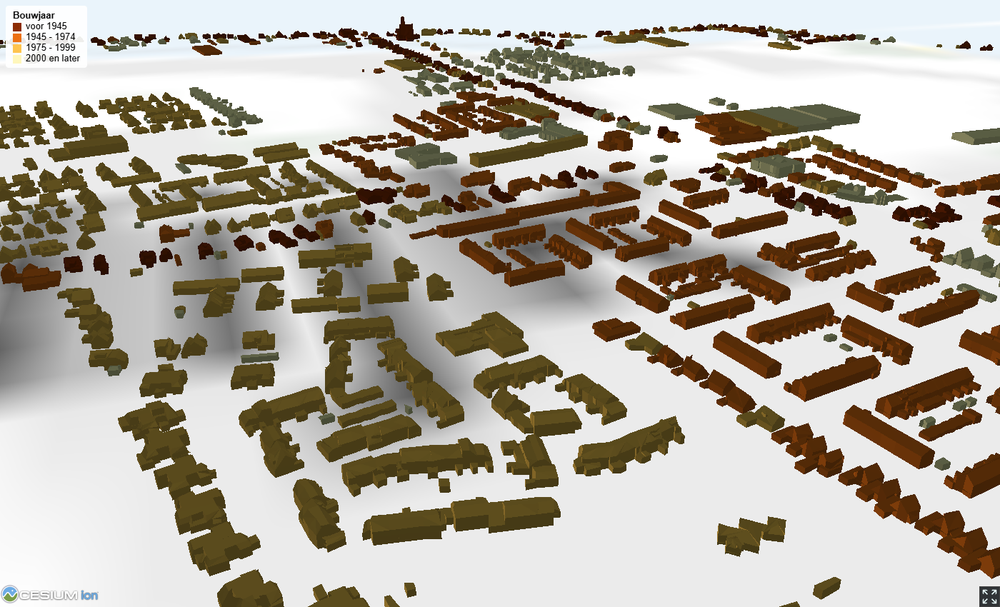
Vraag: kleur de panden eens op dakvorm (b3_dak_type:
slanted, horizontal, multiple horizontal of unknown). Gebruik
hiervoor een vergelijking met tekst, zoals ${b3_dak_type} === 'slanted'.
docker exec -it tyler sh naar de tyler-container:
tyler ./input --output ./output/panden_expliciet --object-type Building --object-type BuildingPart --include-parent-attributes --lod-building-part 2.2 --object-attributes identificatie:string,oorspronkelijkbouwjaar:int,status:string,b3_dak_type:string,b3_bouwlagen:int,b3_h_dak_max:float --3dtiles-metadata-class pandVraag: deel 1 had een database en twee tools nodig, deel 3 één tool en geen database. Wanneer kies je voor welke aanpak?
Meer? In de extra opdracht maak je een 1.1-tileset met drie detailniveaus (LoD 1.2, 1.3 en 2.2) die elkaar vervangen als je inzoomt.
Maak één tileset waarin de 3DBAG-panden van Andijk meer detail krijgen als je inzoomt: ver weg LoD 1.2 (blokken), dichterbij LoD 1.3 (blokken met dakhoogtes), dichtbij LoD 2.2 (met dakvormen). Een fijner niveau vervangt het grovere (refine: REPLACE).
Waarom niet met tyler? tyler kiest één LoD per objecttype en verdeelt de panden alleen over de ruimte (refine: ADD). pg2b3dm kan wel meerdere LoD's boven elkaar zetten, met een LOD-kolom, en schrijft standaard .glb: ook dit wordt 3D Tiles 1.1. Je gebruikt hiervoor de Docker-omgeving van deel 1 (database, GDAL en pg2b3dm).
./container/data/3dbag
van deel 1 (maak de map zelf aan).
Lukt downloaden niet? De bestanden staan ook in data_bronnen/3dbag_andijk in de map data Tiles(1_1) tutorial.
docker exec -it workspace shfor f in data/3dbag/*.gz; do gunzip "$f" 2>/dev/null || mv "$f" "${f%.gz}"; doneogrinfo -so data/3dbag/8-512-888.gpkgElke LoD heeft een eigen laag: lod12_3d, lod13_3d en lod22_3d, met per pand-deel de geometrie en de identificatie. De attributen, zoals het bouwjaar, staan in de laag pand.
for f in data/3dbag/*.gpkg; do for l in lod12_3d lod13_3d lod22_3d pand; do ogr2ogr -f "PostgreSQL" PG:"host=postgis port=5432 user=postgres dbname=postgres password=postgres" "$f" $l -nln public.bag_$l -append -t_srs epsg:4979 -lco GEOMETRY_NAME=geom; done; doneTwee lussen: voor elk bestand, voor elke laag. -append voegt de vier tiles samen in één tabel per laag (bag_lod12_3d, bag_lod13_3d, bag_lod22_3d en bag_pand). -t_srs epsg:4979 rekent RD + NAP om naar WGS84 met hoogtes boven de ellipsoïde, zodat de panden op het terrein staan. De meldingen Layer creation options ignored zijn onschuldig: ze verschijnen omdat bestand 2 tot en met 4 aan een bestaande tabel worden toegevoegd.
psql -c "SELECT count(*) FROM public.bag_lod22_3d;" geeft 3794.Let op: draai je de import nog een keer, dan staan alle panden er dubbel
in (door -append). Verwijder dan eerst de tabellen, bijvoorbeeld met
DROP TABLE public.bag_lod12_3d; en hetzelfde voor de andere drie.
CREATE TABLE public.pand_lod AS
SELECT l.identificatie, p.oorspronkelijkbouwjaar::int AS oorspronkelijkbouwjaar, 0 AS lod, l.geom
FROM public.bag_lod12_3d l JOIN public.bag_pand p USING (identificatie)
UNION ALL
SELECT l.identificatie, p.oorspronkelijkbouwjaar::int AS oorspronkelijkbouwjaar, 1 AS lod, l.geom
FROM public.bag_lod13_3d l JOIN public.bag_pand p USING (identificatie)
UNION ALL
SELECT l.identificatie, p.oorspronkelijkbouwjaar::int AS oorspronkelijkbouwjaar, 2 AS lod, l.geom
FROM public.bag_lod22_3d l JOIN public.bag_pand p USING (identificatie);
CREATE INDEX ON public.pand_lod USING gist(st_centroid(st_envelope(geom)));Elk pand staat er drie keer in: één keer per LoD. Het bouwjaar komt uit de laag pand (via identificatie). ::int maakt er een geheel getal van: als kommagetal schrijft pg2b3dm het bouwjaar zo weg dat de validator een fout geeft.
pg2b3dm -U postgres -h postgis -p 5432 -d postgres -t public.pand_lod -c geom -l lod -r REPLACE -a identificatie,oorspronkelijkbouwjaar,lod --use_implicit_tiling false -g 160 -o ./output/panden_lod-l lod: de LOD-kolom. pg2b3dm maakt per gebied een keten van drie tiles:
lod 0, daaronder lod 1, daaronder lod 2. -r REPLACE: een fijner niveau vervangt het
grovere. -g 160 bepaalt de geometric error en daarmee wanneer de viewer wisselt: bij een
scherm van ongeveer 900 pixels hoog op zo'n 1 km (LoD 1.2 → 1.3) en 500 m (1.3 → 2.2).
Zonder --create_gltf false schrijft pg2b3dm .glb: kijk maar naar "version": "1.1"
in tileset.json. Valideer daarna met
3d-tiles-validator --tilesetFile ./output/panden_lod/tileset.json (0 errors).
const tilesetLod = await Cesium.Cesium3DTileset.fromUrl(
"./output/panden_lod/tileset.json"
);
viewer.scene.primitives.add(tilesetLod);
tilesetLod.style = new Cesium.Cesium3DTileStyle({
color: {
conditions: [
["${lod} === 0", "color('#E8A33D')"],
["${lod} === 1", "color('#3D8BE8')"],
["true", "color('#8DB63F')"]
]
}
});Ga naar http://localhost:8080/cesium-viewer.html en zoom langzaam in op Andijk: oranje (LoD 1.2) wordt blauw (LoD 1.3) en daarna groen (LoD 2.2).
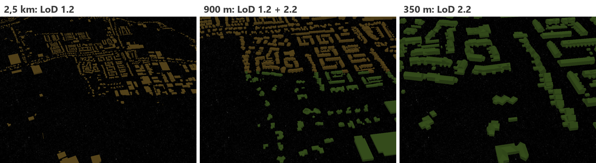
Vraag: vergelijk de map output/panden_lod (ongeveer 40 MB) met de tyler-tileset uit deel 3 (3,5 MB). Waar komt het verschil vandaan? Denk aan de drie LoD's en aan compressie (meshopt).
Vraag: probeer -g 80 en -g 320. Wat gebeurt er met de afstand waarop het detail wisselt?
Voer de volgende commando's uit om de Docker containers te stoppen en te verwijderen:
docker compose downOptioneel: je kunt de gemaakte docker images verwijderen met het volgende commando:
docker rmi 3dtiles_workshop-workspacedocker rmi postgis/postgisHeb je deel 3 (3D Tiles 1.1) gedaan? Voer dan ook in de directory van die omgeving uit:
docker compose downOptioneel: verwijder de images van deel 3:
docker rmi 3dgi/tyler:0.4.1Wat hebben we geleerd?